Azure Fundamentals Exam Part 3
146. Note: This question is part of a series of questions that present the same scenario. Each question in the series contains a unique solution that might meet the stated goals. Some question sets might have more than one correct solution, while others might not have a correct solution. After you answer a question in this section, you will NOT be able to return to it. As a result, these questions will not appear in the review screen. Your Azure environment contains multiple Azure virtual machines. You need to ensure that a virtual machine named VM1 is accessible from the Internet over HTTP. Solution: You modify an Azure Traffic Manager profile. Does this meet the goal?
A. Yes
B. No
147. Your company plans to deploy several web servers and several database servers to Azure. You need to recommend an Azure solution to limit the types of connections from the web servers to the database servers. What should you include in the recommendation?
A. network security groups (NSGs)
B. Azure Service Bus
C. a local network gateway
D. a route filter
148. HOTSPOT - To complete the sentence, select the appropriate option in the answer area. Hot Area: 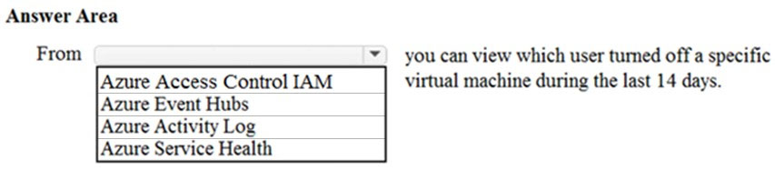
149. Which service provides network traffic filtering across multiple Azure subscriptions and virtual networks?
A. Azure Firewall
B. an application security group
C. Azure DDoS protection
D. a network security group (NSG)
150. Which Azure service should you use to store certificates?
A. Azure Security Center
B. an Azure Storage account
C. Azure Key Vault
D. Azure Information Protection
151. Which Azure service can you use as a security information and event management (SIEM) solution?
A. Azure Analysis Services
B. Azure Sentinel
C. Azure Information Protection
D. Azure Cognitive Services
152. What can Azure Information Protection encrypt?
A. network traffic
B. documents and email messages
C. an Azure Storage account
D. an Azure SQL database
153. What should you use to evaluate whether your company's Azure environment meets regulatory requirements?
A. the Knowledge Center website
B. the Advisor blade from the Azure portal
C. Compliance Manager from the Service Trust Portal
D. the Solutions blade from the Azure portal
154. HOTSPOT - To complete the sentence, select the appropriate option in the answer area. Hot Area: 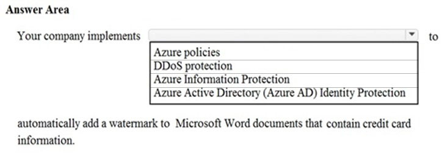
155. HOTSPOT -
To complete the sentence, select the appropriate option in the answer area.
Hot Area:
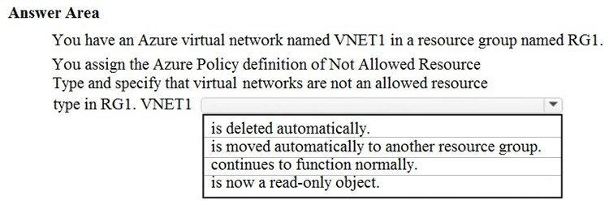
156. Your company has an Azure subscription that contains resources in several regions. A company policy states that administrators must only be allowed to create additional Azure resources in a region in the country where their office is located. You need to create the Azure resource that must be used to meet the policy requirement. What should you create?
A. a read-only lock
B. an Azure policy
C. a management group
D. a reservation
157. This question requires that you evaluate the underlined text to determine if it is correct. From Azure Cloud Shell, you can track your company's regulatory standards and regulations, such as ISO 27001. Instructions: Review the underlined text. If it makes the statement correct, select ג€No change is needed.ג€ If the statement is incorrect, select the answer choice that makes the statement correct.
A. No change is needed.
B. the Microsoft Cloud Partner Portal
C. Compliance Manager
D. the Trust Center
158. HOTSPOT -
For each of the following statements, select Yes if the statement is true. Otherwise, select No.
NOTE: Each correct selection is worth one point.
Hot Area:
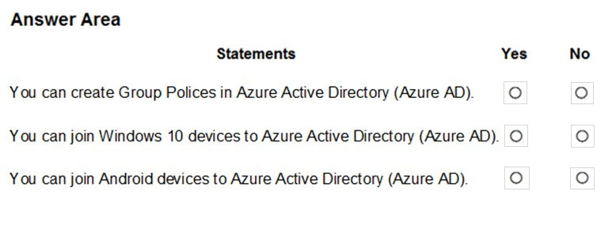
159. HOTSPOT -
To complete the sentence, select the appropriate option in the answer area.
Hot Area:
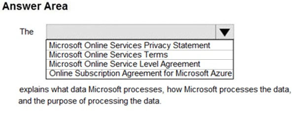
160. HOTSPOT -
To complete the sentence, select the appropriate option in the answer area.
Hot Area:
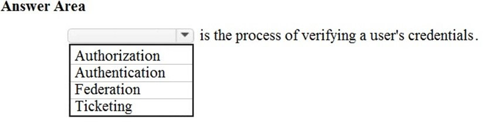
161. HOTSPOT -
To complete the sentence, select the appropriate option in the answer area.
Hot Area:
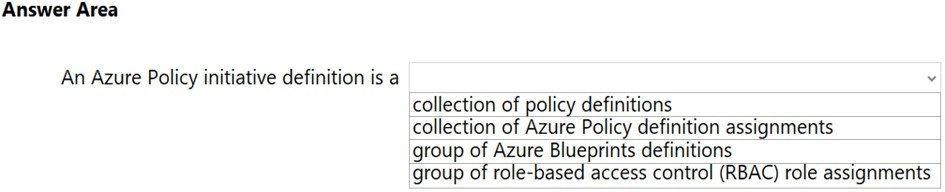
162. HOTSPOT -
To complete the sentence, select the appropriate option in the answer area.
Hot Area:
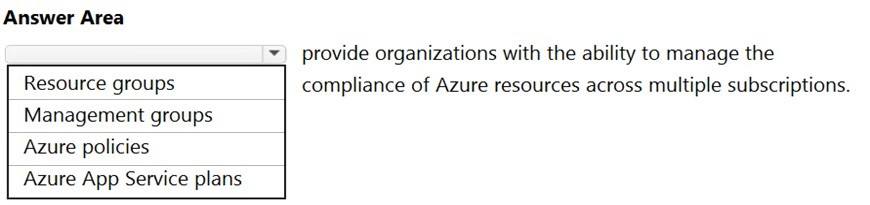
163. HOTSPOT -
For each of the following statements, select Yes if the statement is true. Otherwise, select No.
NOTE: Each correct selection is worth one point.
Hot Area:
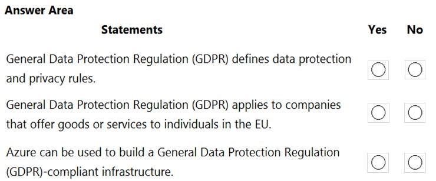
164. HOTSPOT -
For each of the following statements, select Yes if the statement is true. Otherwise, select No.
NOTE: Each correct selection is worth one point.
Hot Area:
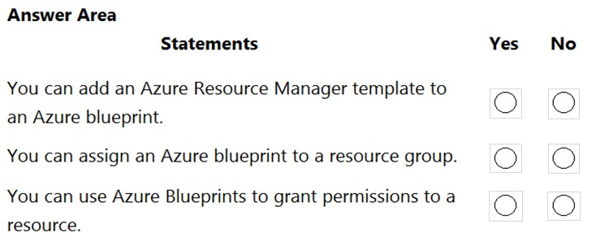
165. HOTSPOT -
For each of the following statements, select Yes if the statement is true. Otherwise, select No.
NOTE: Each correct selection is worth one point.
Hot Area:
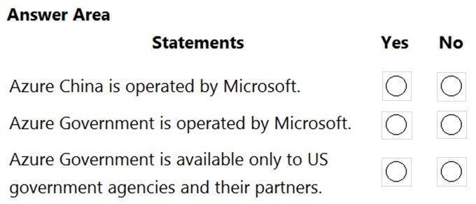
166. HOTSPOT -
For each of the following statements, select Yes if the statement is true. Otherwise, select No.
NOTE: Each correct selection is worth one point.
Hot Area:
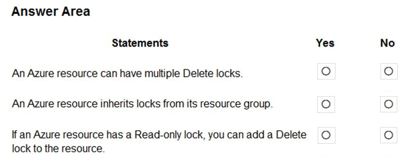
167. Your company plans to migrate all on-premises data to Azure. You need to identify whether Azure complies with the company's regional requirements. What should you use?
A. the Knowledge Center
B. Azure Marketplace
C. the MyApps portal
D. the Trust Center
168. HOTSPOT -
For each of the following statements, select Yes if the statement is true. Otherwise, select No.
NOTE: Each correct selection is worth one point.
Hot Area:
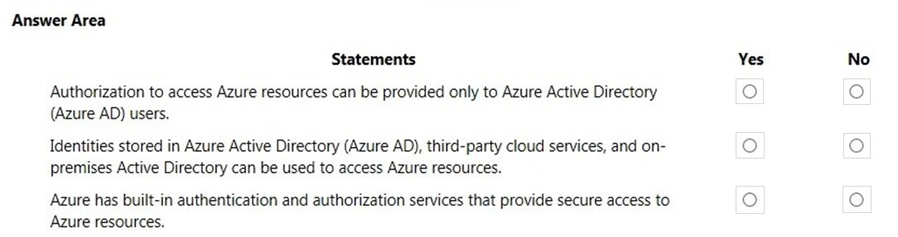
169. HOTSPOT -
To complete the sentence, select the appropriate option in the answer area.
Hot Area:
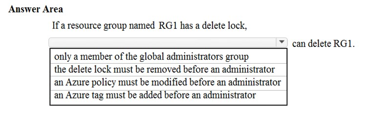
170. This question requires that you evaluate the underlined text to determine if it is correct. Azure Germany can be used by legal residents of Germany only. Instructions: Review the underlined text. If it makes the statement correct, select ג€No change is neededג€. If the statement is incorrect, select the answer choice that makes the statement correct.
A. no change is needed
B. only enterprises that are registered in Germany
C. only enterprises that purchase their azure licenses from a partner based in Germany
D. any user or enterprise that requires its data to reside in Germany
171. HOTSPOT -
For each of the following statements, select Yes if the statement is true. Otherwise, select No.
NOTE: Each correct selection is worth one point.
Hot Area:
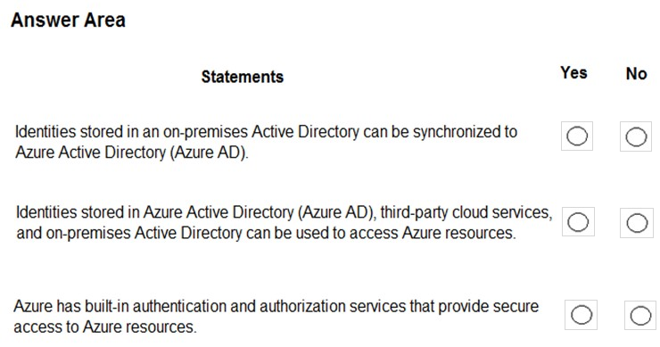
172. HOTSPOT -
To complete the sentence, select the appropriate option in the answer area.
Hot Area:
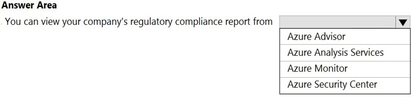
173. What should you use to evaluate whether your company's Azure environment meets regulatory requirements?
A. Azure Service Health
B. Azure Knowledge Center
C. Azure Security Center
D. Azure Advisor
174. Your company has an Azure subscription that contains resources in several regions. You need to ensure that administrators can only create resources in those regions. What should you use?
A. a read-only lock
B. an Azure policy
C. a management group
D. a reservation
175. HOTSPOT -
For each of the following statements, select Yes if the statement is true. Otherwise, select No.
NOTE: Each correct selection is worth one point.
Hot Area:
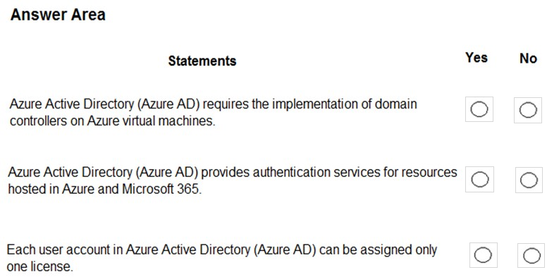
176. Which two types of customers are eligible to use Azure Government to develop a cloud solution? Each correct answer presents a complete solution. NOTE: Each correct selection is worth one point.
A. a Canadian government contractor
B. a European government contractor
C. a United States government entity
D. a United States government contractor
E. a European government entity
177. HOTSPOT -
For each of the following statements, select Yes if the statement is true. Otherwise, select No.
NOTE: Each correct selection is worth one point.
Hot Area:
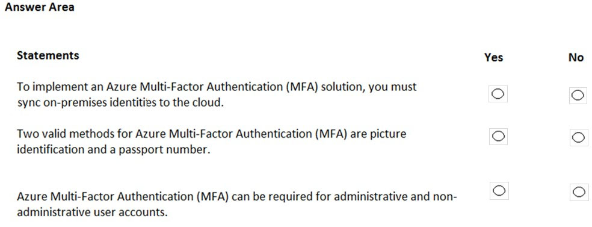
178. You need to ensure that when Azure Active Directory (Azure AD) users connect to Azure AD from the Internet by using an anonymous IP address, the users are prompted automatically to change their password. Which Azure service should you use?
A. Azure AD Connect Health
B. Azure AD Privileged Identity Management
C. Azure Advanced Threat Protection (ATP)
D. Azure AD Identity Protection
179. DRAG DROP -
Match the term to the correct definition.
Instructions: To answer, drag the appropriate term from the column on the left to its description on the right. Each term may be used once, more than once, or not at all.
NOTE: Each correct match is worth one point.
Select and Place:
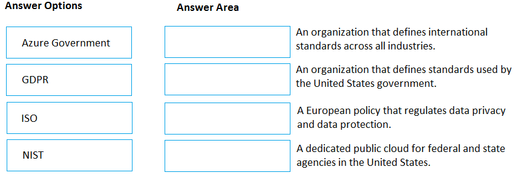
180. To what should an application connect to retrieve security tokens?
A. an Azure Storage account
B. Azure Active Directory (Azure AD)
C. a certificate store
D. an Azure key vault
181. Your network contains an Active Directory forest. The forest contains 5,000 user accounts. Your company plans to migrate all network resources to Azure and to decommission the on-premises data center. You need to recommend a solution to minimize the impact on users after the planned migration. What should you recommend?
A. Implement Azure Multi-Factor Authentication (MFA)
B. Sync all the Active Directory user accounts to Azure Active Directory (Azure AD)
C. Instruct all users to change their password
D. Create a guest user account in Azure Active Directory (Azure AD) for each user
182. HOTSPOT -
For each of the following statements, select Yes if the statement is true. Otherwise, select No.
NOTE: Each correct selection is worth one point.
Hot Area:
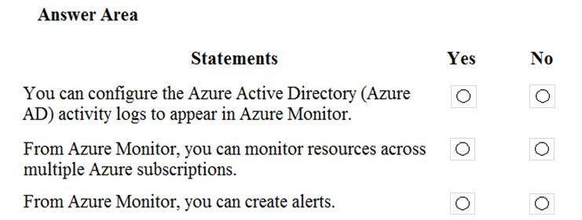
183. HOTSPOT -
You create a resource group named RG1 in Azure Resource Manager.
You need to prevent the accidental deletion of the resources in RG1.
Which setting should you use? To answer, select the appropriate setting in the answer area.
Hot Area:
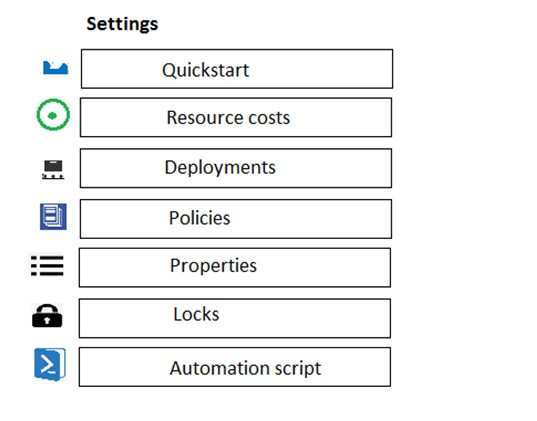
184. You have a resource group named RG1. You need to prevent the creation of virtual machines only in RG1. The solution must ensure that other objects can be created in RG1. What should you use?
A. a lock
B. an Azure role
C. a tag
D. an Azure policy
185. HOTSPOT -
For each of the following statements, select Yes if the statement is true. Otherwise, select No.
NOTE: Each correct selection is worth one point.
Hot Area:
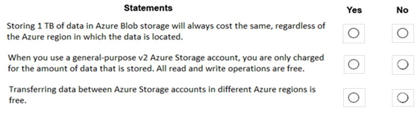
186. HOTSPOT -
For each of the following statements, select Yes if the statement is true. Otherwise, select No.
NOTE: Each correct selection is worth one point.
Hot Area:
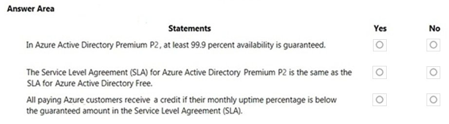
187. HOTSPOT -
For each of the following statements, select Yes if the statement is true. Otherwise, select No.
NOTE: Each correct selection is worth one point.
Hot Area:
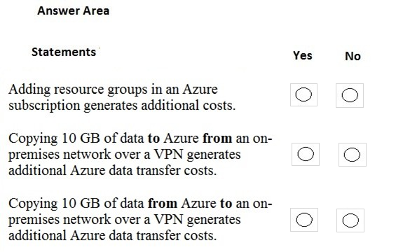
188. HOTSPOT -
To complete the sentence, select the appropriate option in the answer area.
Hot Area:
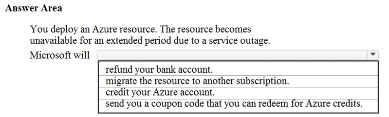
189. Which task can you perform by using Azure Advisor?
A. Integrate Active Directory and Azure Active Directory (Azure AD).
B. Estimate the costs of an Azure solution.
C. Confirm that Azure subscription security follows best practices.
D. Evaluate which on-premises resources can be migrated to Azure.
190. HOTSPOT -
For each of the following statements, select Yes if the statement is true. Otherwise, select No.
NOTE: Each correct selection is worth one point.
Hot Area:
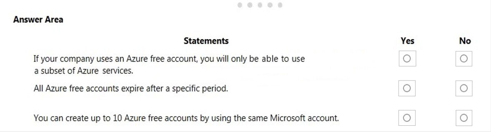